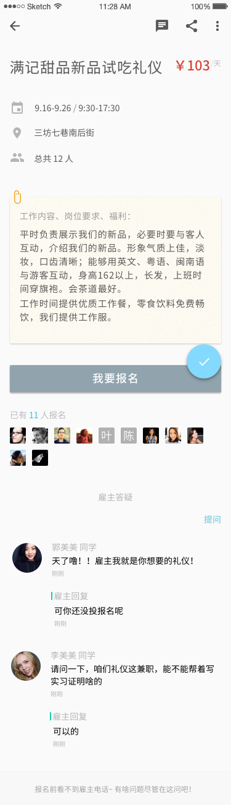
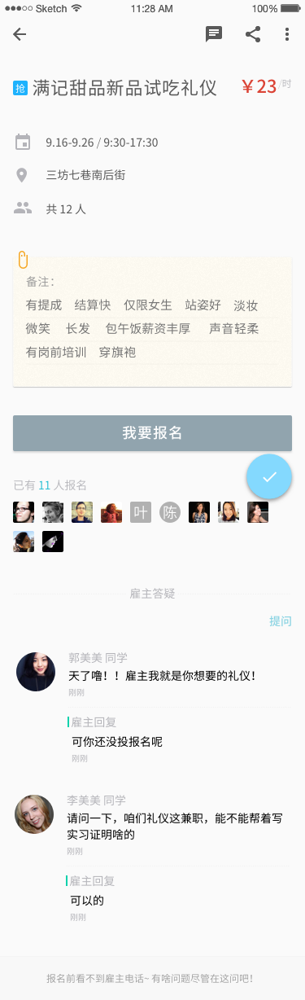

从右至左，标题栏可选动作分别为：
此处「电话联系」较隐蔽，鼓励兼客通过评论及 IM 解决问题。针对采集岗位，会特别引导。
岗位的主要信息包含：
注：旧版本中点击「工作日期」弹框，点击「地图」跳转至地图页等功能，v2.0 暂不支持。另外，移除旧版本中的费用押金警示。
格式：11 人已报名
同时列出兼客头像，默认最多显示 30 个，点击「更多」显示全部。
评论内容对所有用户公开。仅支持一问一答，不支持兼客互相回复。
兼客点击「提问题」后弹框要求输入问题内容。提问将被发送至雇主消息铃铛中提醒雇主作答。兼客得到雇主回复，也将在消息铃铛中作提醒。
每条评论包含以下信息：
注：对于采集岗位特别引导兼客电话联系雇主。「这是采集来的优质岗位，推荐电话联系」
岗位详情页中抢单兼职与普通兼职所呈现信息差别较少。仅体现在 3 处：
普通兼职

抢单兼职

兼客可点击岗位要求下方的长条状「报名」按钮或右下方浮动圆按钮报名。
如兼客已报名，则条状按钮置灰，变为「已报名」，且浮动圆按钮动作变为「电话联系」。
兼客可点击岗位要求下方的长条状「立即抢单」按钮或右下方浮动圆按钮抢单。
如兼客已抢单，则条状按钮置灰，变为「抢单成功」，且浮动圆按钮动作变为「电话联系」。
与兼客端仅几处区别：
从右至左，（列表中）从上至下，标题栏可选动作分别为：
点击该下拉列表项后，跳转至「新建岗位」页。所有模板岗位中的字段信息复制到新页面。
注：状态为「报名中」的岗位，可选动作如上。状态为「审核中」、「已结束」或「被举报」的岗位，移除「结束招聘」「刷新岗位」「社交分享」。
区别于旧版本，v2.0 中不存在将某岗位保存为模板的步骤。所有由雇主通过「新建岗位」页确认发布的岗位均可被当做模板使用。
以下可选动作或信息不在雇主端显示：
移除「提问题」链接，每条兼客评论下有「回复」链接。一条评论只能被回复一次，兼客提问题，雇主答疑，兼客提另一个问题，雇主再次答疑。兼客之间不能互相评论。